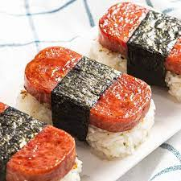

Spam Musubi
Description
Spam Musubi is a quick and easy snack that can act as a full meal or something in-between. You can add radish,
Egg, Perilla leaf, etc to keep your taste buds fresh and engaged! Who doesn't like spam musubi?!
Ingredients
Steps
- Cut the spam into long sheets
- Fry the spam for a nice crispy surface
- Put the fried spam into a bowl of the teriyaki sauce to marinade
- Make a layer of rice and place into the spam musubi mold. Ensure the layer of rice is even and the amount
to your liking
- Press the top of the mold onto the spam and rice to give it the rectangular shape
- Cut the nori into strips. Note, you can adjust the width of the sheets for different aesthetics!
- Remove the mold and wrap the nori strips onto the different sections of the musubi
- Cut the musubi into lengths of your choice
- Enjoy!